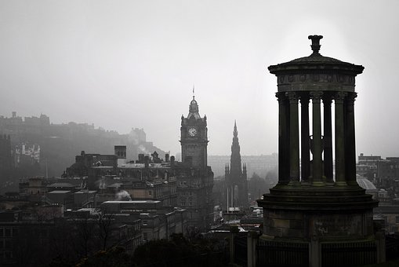
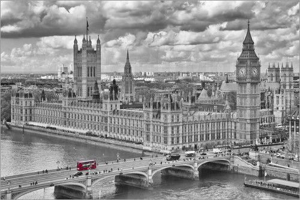
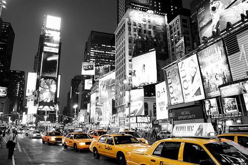
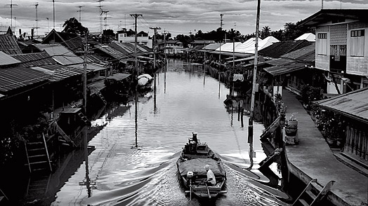

I would like to share some information about my favourite cities.

Edinburgh is one of Europe’s most beautiful cities, draped across a series of rocky hills overlooking the sea. It’s a town intimately entwined with its landscape, with buildings and monuments perched atop crags and overshadowed
by cliffs. From the Old Town’s picturesque jumble of medieval tenements piled high along the Royal Mile, its turreted skyline strung between the black, bull-nosed Castle Rock and the russet palisade of Salisbury Crags, to the
New Town’s neat grid of neoclassical respectability, the city offers a constantly changing perspective.
London
Immersed in history, London's rich seams of eye-opening antiquity are everywhere. The city's buildings are striking milestones in a unique and beguiling biography, and a great many of them – the Tower of London, Westminster Abbey,
Big Ben – are instantly recognisable landmarks. There’s more than enough innovation (the Shard, the Tate Modern extension, the planned Garden Bridge) to put a crackle in the air, but it never drowns out London’s seasoned, centuries-old
narrative. Architectural grandeur rises up all around you in the West End, ancient remains dot the City and charming pubs punctuate the historic quarters, leafy suburbs and river banks. Take your pick.

New York

Upstate New York – anywhere outside NYC – is a dream destination for those who cherish the great outdoors as much as a bar crawl around the Lower East Side. The grand Hudson River heads straight north from NYC, like an escape route.
From Albany, the 524-mile Erie Canal cuts due west to Lake Erie, by spectacular Niagara Falls and Buffalo, a fascinating, rust-belt city that's on the rebound.
The St Lawrence River forms the border with Canada in the beautiful Thousand Islands area. Sample fine wines in the Finger Lakes region, hike in the magnificent Adirondack and Catskills mountains, or simply kick back on
the sandy beaches of Long Island.
Bangkok
Same same, but different. This Thailish T-shirt philosophy sums up Bangkok, a city where the familiar and the exotic collide like the flavours on a plate of pàt tai.
Until you’ve eaten on a Bangkok street, noodles mingling with your sweat amid a cloud of exhaust fumes, you haven’t actually eaten Thai food. It can be an intense mix: the base flavours – spicy, sour, sweet and salty –
aren’t exactly meat and potatoes. But for adventurous foodies who don't need white tablecloths, there’s probably no better dining destination in the world. And with immigration bringing every regional Thai and international
cuisine to the capital, it's also a truly diverse experience. And perhaps best of all, Bangkok has got to be one of the best-value dining destinations in the world.

Travel makes one modest. You see what a tiny place you occupy in this world.
Gustav Flaubert
Once a year, go someplace you’ve never been before.
Dalai Lama
The best education I have ever received was through travel.
Lisa Ling
Previous
Next